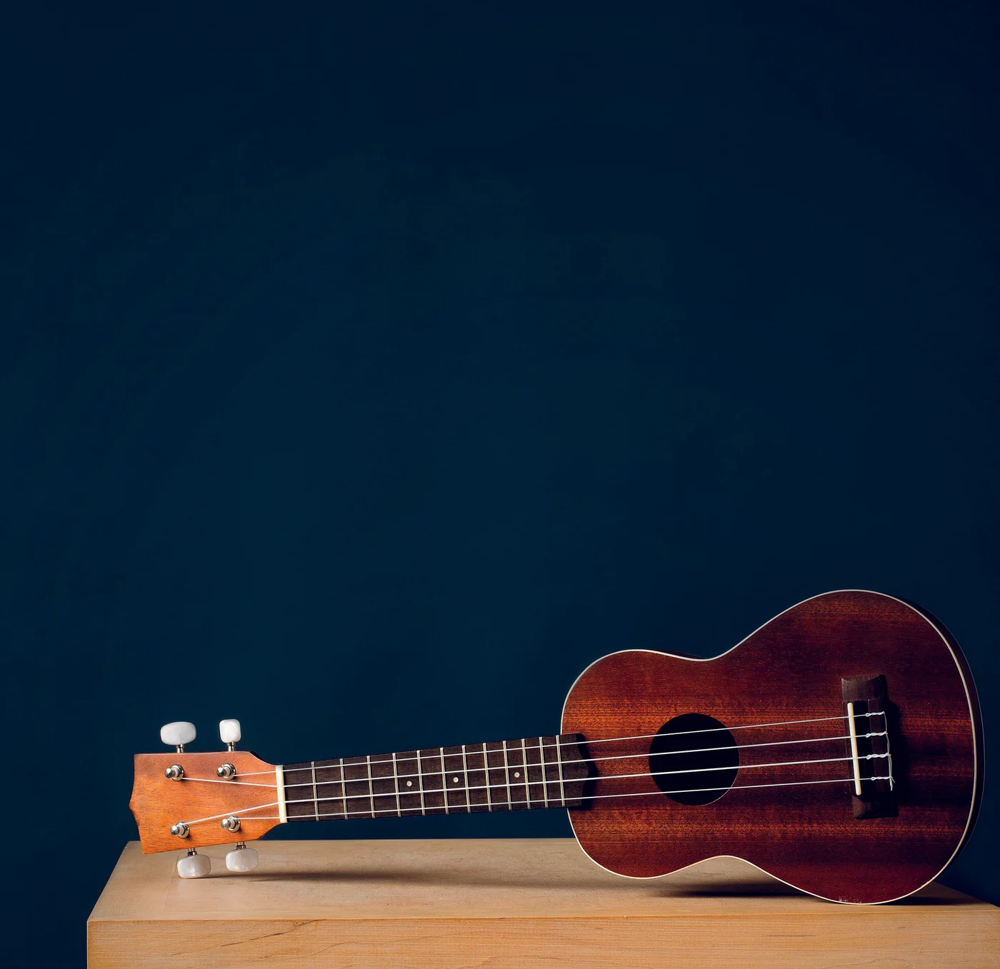
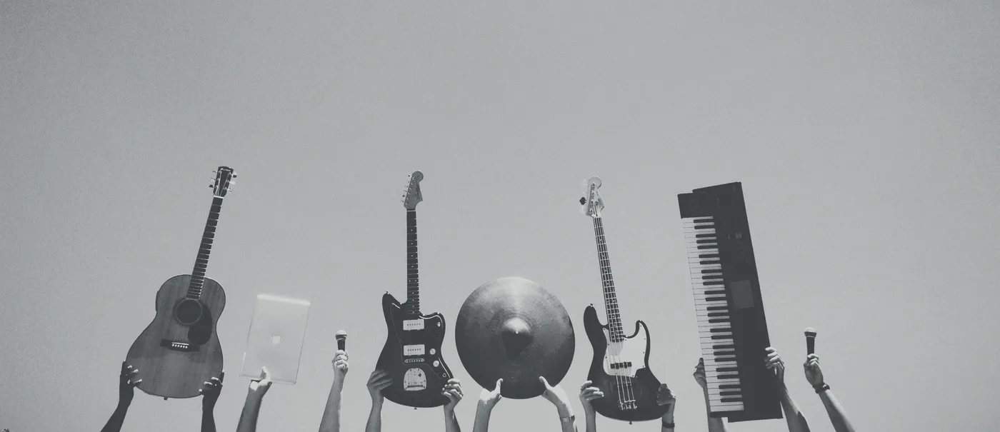

Presenta il tuo strumento.
Inserisci i dettagli, il prezzo che hai in mente e qualche bella foto. Basta un unico modulo.
Mercato usato Musicis
Certe passioni non si consumano. Trova il tuo prossimo strumento o dai una seconda vita a quello che hai amato.

Una nuova possibilità per ogni strumento.
Annunci proposti da chi condivide la tua passione.
Ogni annuncio passa dalla revisione Musicis.
Trova la tua prossima ispirazione
Esplora gli strumenti e lascia spazio a nuove possibilità.
Caricamento del catalogo…

La community Musicis
Una chitarra ferma in custodia. Una tastiera pronta per un altro palco. Mettiamo in relazione persone e strumenti, perché la musica ha sempre qualcosa da dire.
Scopri come funzionaSemplice, dall’inizio alla nuova storia